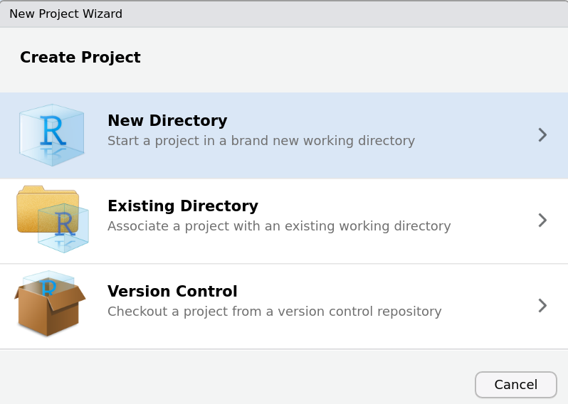
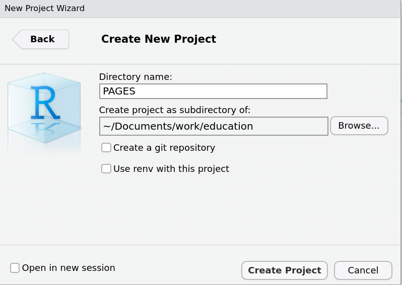
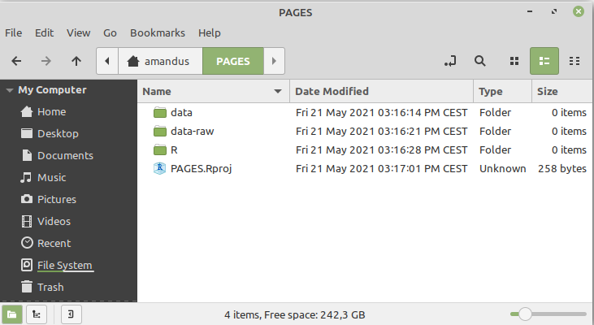
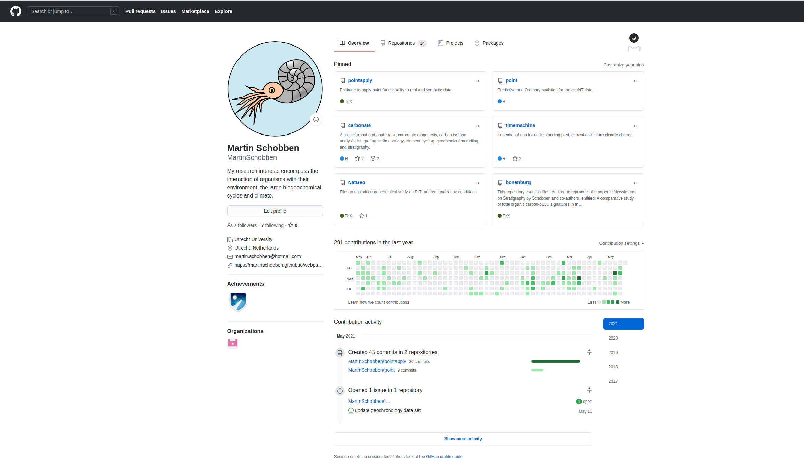

Data (geo)science project
project.Rmd
library(PAGES)RStudio projects
RStudio projects keep all files at one place; scripts, figures and datasets. This way you can always find the script that you used to generate that one particular figure of your manuscript. Secondly, RStudio projects root all files relative to the project directory. For example, saving a figure created in this talk, would look like this.
# scatterplot bonenburg
ggplot(data = bonenburg) +
geom_point(mapping = aes(x = del13Ctoc, y = Height))
# save plot
ggsave("bonenburg.png")Lastly, RStudio projects are convenient when you stop your analyses at the end of one day. When restarting RStudio on the next day you get right back to where you left off.
To create an RStudio project select File from the top toolbar, and from the drop-down menu select New Project. This will initiate a sequence of windows to set up the project. Here, I show the most common options, but many more options are available.
Select New Directory to create a new folder.

Select New Project to create a clean RStudio Project.

Name the New Project. I used here PAGES.

Data Management
After creating a RStudio project, I advice setting up an ordered file structure. Which has as a minimum the following components:
- A
raw-datadirectory containing the unprocessed data and make these data filesread-only. - A
datadirectory containing processed data. - An
Rdirectory containing the R scripts.

To change the permission of files in Linux Ubuntu/Mint select the following by right clicking on the file.

For windows 10 check: https://windowsreport.com/folder-reverting-to-read-only/#1 For MAC OS Mojavo check: https://support.apple.com/guide/mac-help/change-permissions-for-files-folders-or-disks-mchlp1203/mac
Keep back-ups of the raw data directories as a minimum, but preferably the whole directory. Accidents are bound to happen, so to not jeopardize the progress in a time-intensive and expensive research project, the previous recommendations are good practice to prevent future sorrow. Besides back-ups on external hard-drives, universities and research institutes often provide cloud services to sync and back-up materials. Otherwise commercial options are available, such as SpiderOakTM.
Version control
Experienced users will use version control, such as Git and Github, to keep track of the changes in their scripts over time. The RStudio Project also integrate this option in its interface.
This is my github frontpage, where I have several repositories containing as a remote back-up of my scripts and the complete history of revisions through Git version control.
